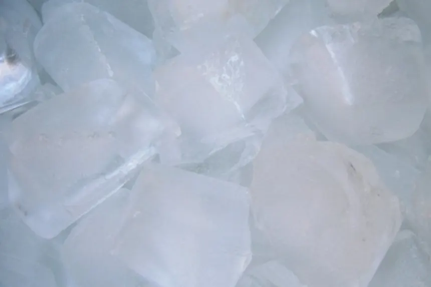

Home
Odin's Ice Cubes

Description
For those who don't know how or have forgotten how to make ice when the ice tray is empty.
Ingredients
- A water source (clean one if possible)
- Some tray, with well-sized square indents, to individually contain above water.
Steps
- Grab your ice cubes tray.
- Empty the ice cubes that are left in the tray, if there are any left, into the sink, leave alone to melt or run hot water on for a bit.
- Take the tray over to the sink and fill the holes, not the whole tray, with cold water. Hot water will freeze faster and be more clear.
- Open the freezer door.
- Place the water filled ice trays back in the freezer.
- Close the freezer door.
- Be sure to leave for around 4-6 hours at least to make sure it is frozen.
- It is a good idea to replace ice cubes that have sat for too long due to sublimation, if there are even any left.